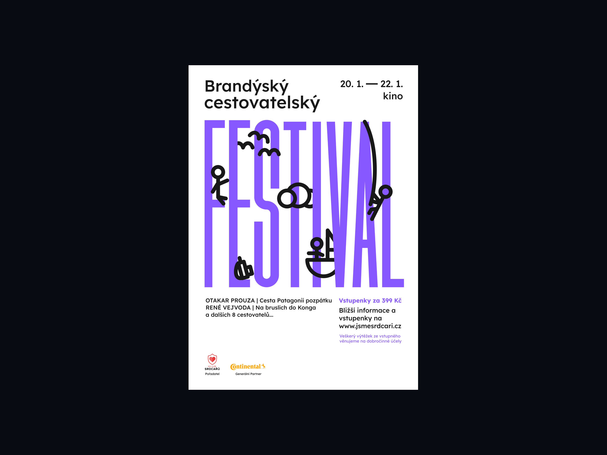
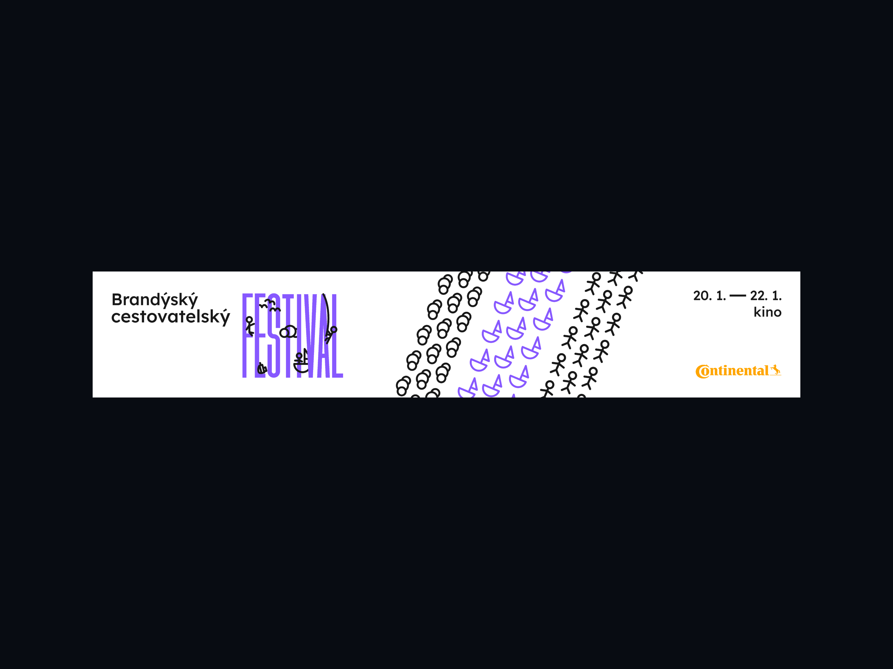
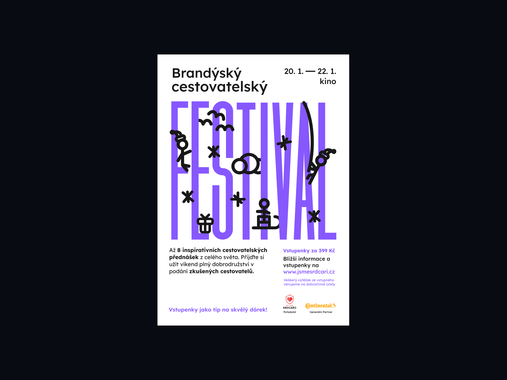
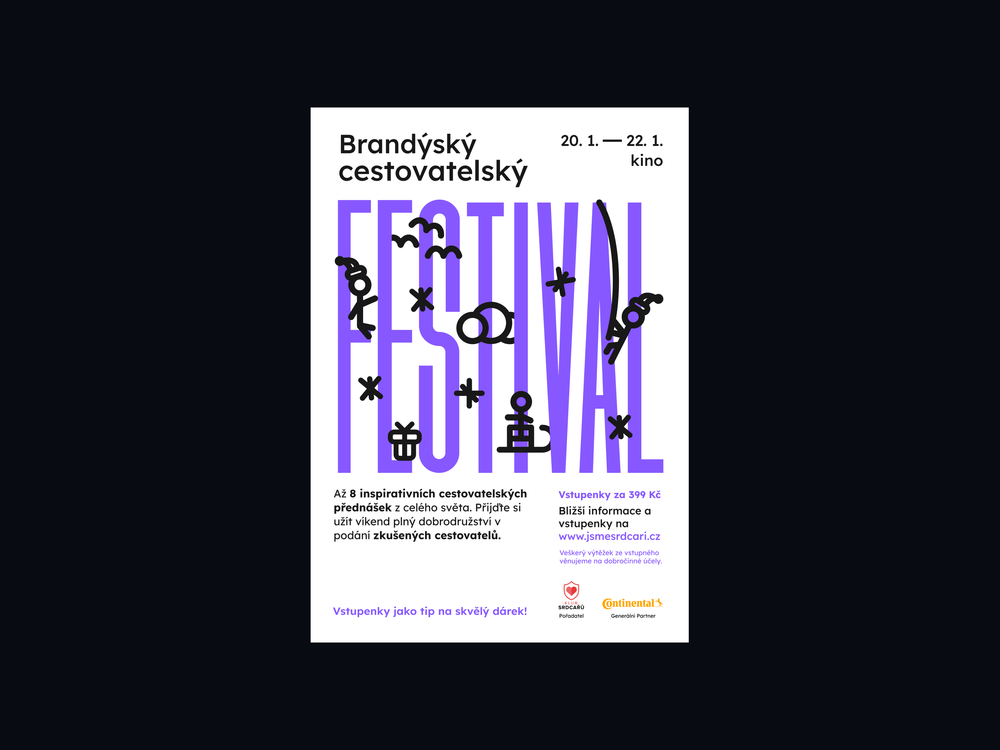
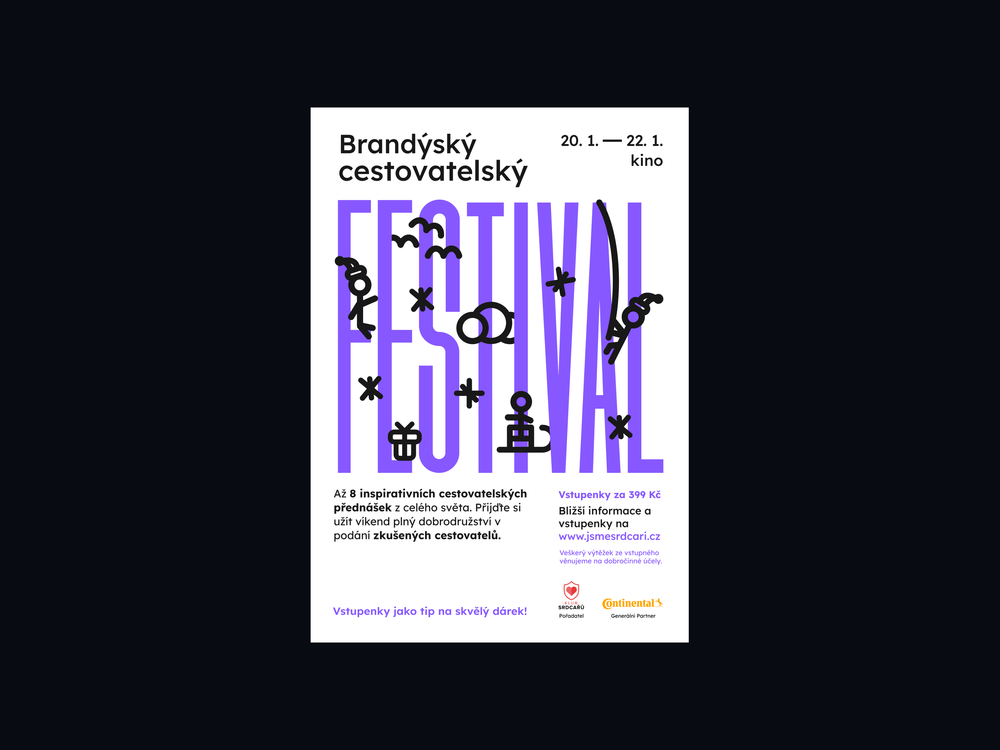

Příprava
— 01
— Cílovou skupinou na této akci jsou všechny věkové kategorie. Proto se zvolily znaky jak hravosti, tak i formálního typu. Brandýský cestovatelský festival je vyprávění zkušeností a poznatků určitého cestovatele. Proto se přidávají do brand strategie i znaky, které charakterizují cestování a objevování.
— Vizuální identita by měla být zároveň důležitá, ale i hravá. Proto jsem se rozhodl kombinovat čistou a elegantní typografii, která se bude společně s ilustracemi doplňovat.
Design vizuální identity
— 02
— Dostáváme se do hlavní části navrhování vizuální identity. Vizuální identita se skládá z typografie, která informuje o názvu akce(Brandýský cestovatelský festival). Do logotypu jsem zvolil klasický a čistý font, který jsem u posledního slova akce(FESTIVAL) roztáhl, abych definoval znak hravosti.
— Mezi písmena klíčového slova jsem umístil ilustrace. Ilustrace se skládají z panáčků, lodi, batohu, a ptáků. Spojení dohromady symbolizuje lidi, cestovatele, kteří objevují své nové poznatky a zkušenosti např. horolezec, člověk, který se dívá z výšky na ptáky a člověk, který cestuje na lodi.
Finální náhled
— 03


 

